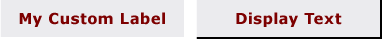

Практическое руководство. Рисование текста для фона элемента управления
Можно рисовать текст непосредственно на фоне элемента управления, преобразовав строку текста в FormattedText объекта, а затем рисуя объект элемента управления DrawingContext. Этот метод также можно использовать для рисования на фоне объектов, производных от Panel, такие как Canvas и StackPanel.

Пример элементов управления с фоном из пользовательского текста
Пример
Для рисования фона элемента управления, создайте новый DrawingBrush объекта и нарисуйте преобразованный текст объекта DrawingContext. Затем назначьте новый DrawingBrush свойству фона элемента управления.
В следующем примере кода показано, как создать FormattedText и рисовать фон Label и Button объекта.
// Handle the WindowLoaded event for the window.
private void WindowLoaded(object sender, EventArgs e)
{
// Update the background property of the label and button.
myLabel.Background = new DrawingBrush(DrawMyText("My Custom Label"));
myButton.Background = new DrawingBrush(DrawMyText("Display Text"));
}
// Convert the text string to a geometry and draw it to the control's DrawingContext.
private Drawing DrawMyText(string textString)
{
// Create a new DrawingGroup of the control.
DrawingGroup drawingGroup = new DrawingGroup();
// Open the DrawingGroup in order to access the DrawingContext.
using (DrawingContext drawingContext = drawingGroup.Open())
{
// Create the formatted text based on the properties set.
FormattedText formattedText = new FormattedText(
textString,
CultureInfo.GetCultureInfo("en-us"),
FlowDirection.LeftToRight,
new Typeface("Comic Sans MS Bold"),
48,
System.Windows.Media.Brushes.Black // This brush does not matter since we use the geometry of the text.
);
// Build the geometry object that represents the text.
Geometry textGeometry = formattedText.BuildGeometry(new System.Windows.Point(20, 0));
// Draw a rounded rectangle under the text that is slightly larger than the text.
drawingContext.DrawRoundedRectangle(System.Windows.Media.Brushes.PapayaWhip, null, new Rect(new System.Windows.Size(formattedText.Width + 50, formattedText.Height + 5)), 5.0, 5.0);
// Draw the outline based on the properties that are set.
drawingContext.DrawGeometry(System.Windows.Media.Brushes.Gold, new System.Windows.Media.Pen(System.Windows.Media.Brushes.Maroon, 1.5), textGeometry);
// Return the updated DrawingGroup content to be used by the control.
return drawingGroup;
}
}